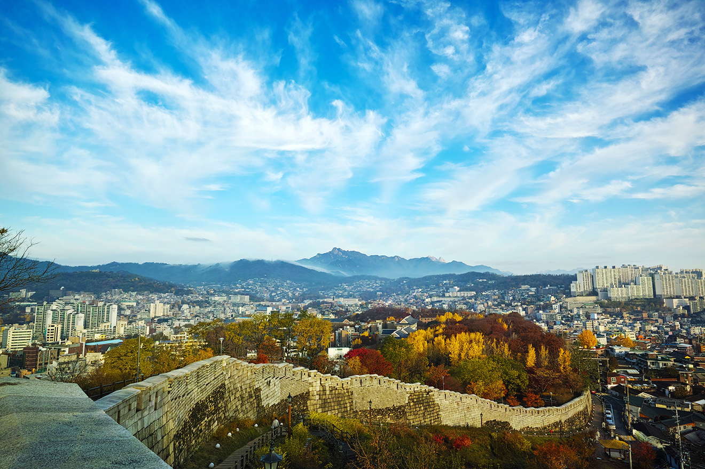
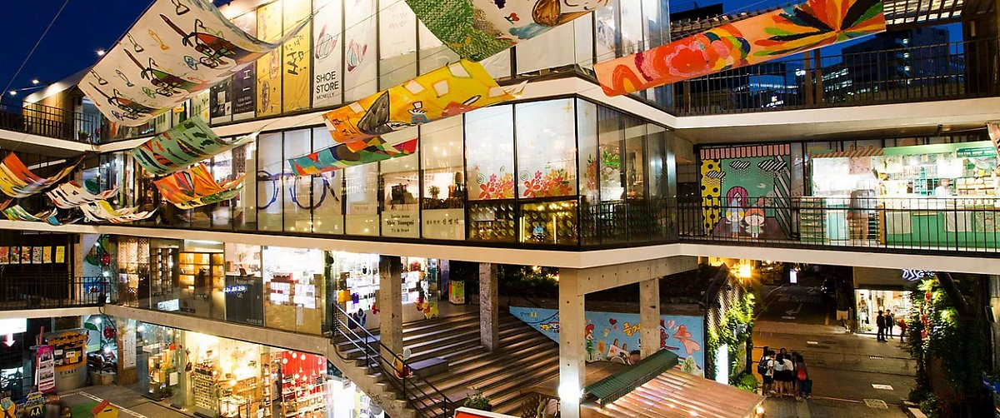
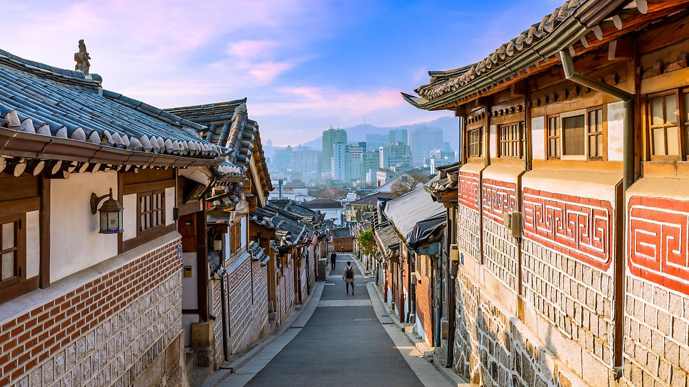
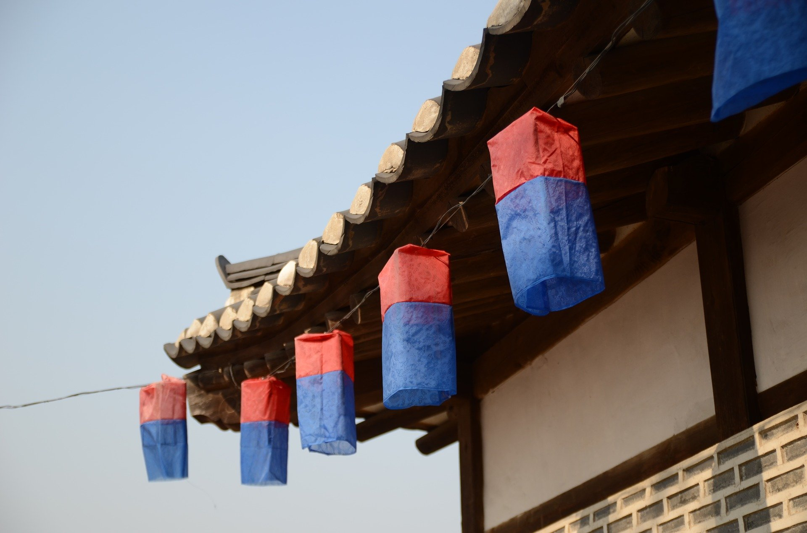
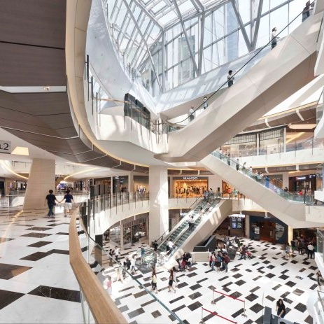
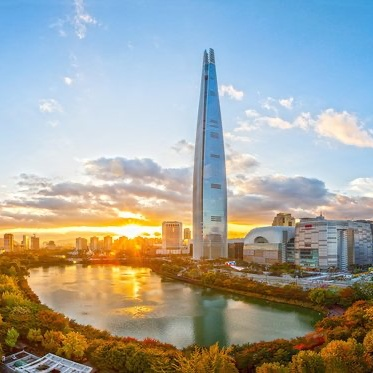
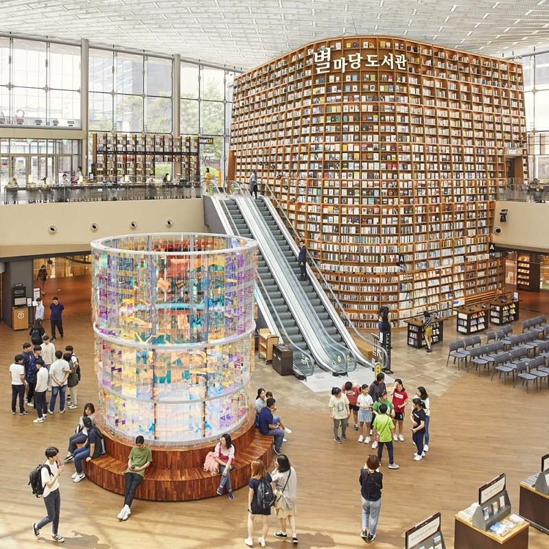

지금의 서울
이벤트
축제&행사
전시
추천
에디터 추천
테마코스
도보해설관광
한류관광
여행지
명소
엔터테인먼트
음식
게스트하우스
여행정보
가이드북&지도
시티투어버스
날씨

1. 한양 도성의 야경 명소, 낙산공원
전망 좋은 갤러리 카페에서 차도 마시고, 동대문디지털플라자(DDP)에서 쇼핑까지

2. 인사동을 대표하는 명소
스프링처럼 중정을 휘감아 옥상까지 이어지는 쌈지길 데이트

3. 한국 전통문화가 숨쉬는 곳! 북촌한옥마을
문틈으로 스며드는 은은한 달빛과 함께 한국의 멋과 향기를 느끼다.

전통 한옥마을 체험
'서울구석구석' 체험 봉사단에서 여행객들을 위한 한옥마을 체험을 돕고 있습니다.
저희 카카오톡 채널로 문의해 주시면 친절하게 안내해 드립니다.
공지사항
1. [이벤트] 사진이 들어간 교통카드를 무료 제작합니다.
2022-02-24
2. 북촌, 익선동 일대 한옥마을 체험행사를 위한 봉사단을 모집합니다.
2022-02-11
3. 인사동 투어 및 전시 기획자를 모십니다.
2022-01-28
4. GusukGusuk에서 고객의 소리함 160개를 구석구석마다 설치했습니다.
2022-01-25
갤러리

1. 현대백화점 IFC몰

2. 잠실 롯데 L타워

3. 코엑스 별마당도서관
03190, 서울특별시 종로구 청계천로999 (삼일빌딩) 3층
운영 : 월~금, 오전9시~오후6시, master@gusukgusuk.net
관광불편처리센터 2580
Copyright(c) 2022 GusukGusuk Tourism Organization. All right reserved.
I.SEOUL.U
한국관광공사
서울시청
강남구청
종로구청
사진 교통카드 무료 제작 행사
서울시를 관광하신 여행자 분들에게 방문 인증샷을 가져오시면
교통카드에 무료로 새겨드리고 2천원을 충전시켜드립니다.
X닫기